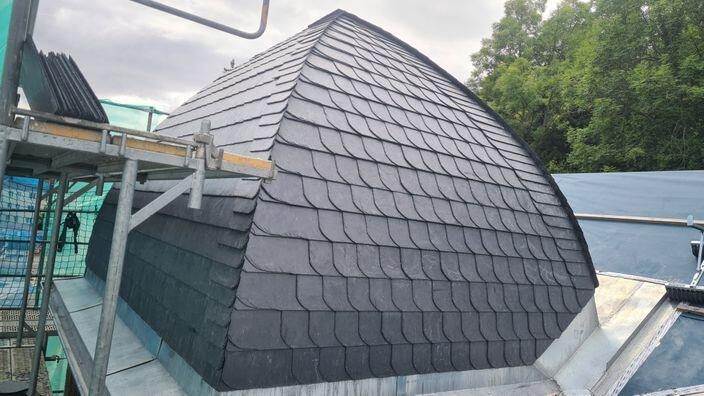
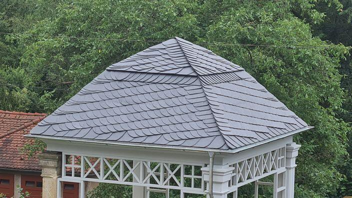

Steildach & Neueindeckung
Neueindeckung von Steildächern – fachgerecht geplant, sauber ausgeführt und passend zu Ihrem Haus.
Ob schnelle Reparatur, Neueindeckung mit Schiefer oder Flachdachsanierung: Dachdeckermeister Sven Lehmann-Hauck berät ehrlich, plant sorgfältig und arbeitet termintreu – für Dächer, die viele Jahre halten.

Regnet es durchs Dach, muss die Dachrinne gereinigt oder ein Dachfenster ersetzt werden? Vom kleinen Reparaturauftrag bis zur kompletten Neueindeckung erhalten Sie maßgeschneiderte Lösungen, funktionale Konstruktionen und auf Wunsch ökologische Materialien.
Neueindeckung von Steildächern – fachgerecht geplant, sauber ausgeführt und passend zu Ihrem Haus.
Traditionelle Schieferarbeiten bis ins Detail – auch an Gauben, geschwungenen Hauben und Pavillons.
Abdichtung und Sanierung von Flachdächern, zum Beispiel mit Bitumenbahnen – dauerhaft dicht.
Vom Teilbereich bis zum ganzen Dach. Noch gutes Altmaterial wird nach Möglichkeit weiterverwendet.
Einbau, Austausch und Reparatur von Dachfenstern, etwa von Velux – für mehr Licht unterm Dach.
Dämmung mit geeigneten Materialien senkt Heizkosten und sorgt für ein angenehmes Raumklima.
Begrünte Dächer halten Regenwasser zurück, verbessern das Mikroklima und schützen die Abdichtung.
Schnelle Hilfe bei undichten Stellen, Dachwartung und Dachrinnenreinigung – damit aus Kleinem nichts Großes wird.
Ausbau von Dachstühlen, damit aus ungenutztem Raum wertvolle Wohnfläche werden kann.
Besonders bei Schiefer zeigt sich, was Meisterarbeit ausmacht: jede Platte von Hand gesetzt, jede Rundung sauber ausgearbeitet.

Weitere Arbeiten – vom Flachdach bis zur Dachfenster-Montage – zeige ich Ihnen gern bei einem Termin vor Ort.
Termin vereinbarenAls Meisterbetrieb steht Sven Lehmann-Hauck persönlich für Qualität und Termintreue. Sie bekommen eine Beratung, die auf Ihr Dach und Ihr Budget zugeschnitten ist – nicht auf den größtmöglichen Auftrag.
Rufen Sie an oder schreiben Sie eine kurze Nachricht – Sie erhalten schnell eine Rückmeldung.
Zeitnah schaue ich mir Ihr Dach an, nehme Maß und bespreche mit Ihnen, was wirklich nötig ist.
Transparent aufgeschlüsselt und auf Wunsch mit Alternativen, damit Sie in Ruhe entscheiden können.
Pünktlicher Start, ordentliche Baustelle und ein Ergebnis, auf das Sie sich verlassen können.
Ehrliche Rückmeldungen von Auftraggebern aus Dresden und Umgebung, abgegeben auf dem Branchenportal Dachdecker.com.
Ihre Frage ist nicht dabei? Ein kurzer Anruf klärt das meiste am schnellsten.
Ja. Ob einzelne Ziegel, eine undichte Stelle oder eine verstopfte Dachrinne – auch kleinere Aufträge werden zuverlässig erledigt. Gerade bei Feuchtigkeit lohnt es sich, schnell zu handeln, bevor Folgeschäden entstehen.
Der Betrieb sitzt in Dresden (01219) und ist in der ganzen Stadt sowie in der Umgebung im Einsatz. Fragen Sie im Zweifel einfach kurz nach.
Auf Wunsch gern. Häufig gibt es mehr als einen sinnvollen Weg – etwa eine kostensparende Variante oder die Weiterverwendung von noch gutem Altmaterial. Sie erhalten ein ausführliches Angebot, mit dem Sie in Ruhe vergleichen können.
Sie melden sich telefonisch oder per E-Mail und schildern kurz Ihr Anliegen. Danach wird zeitnah ein Termin zur Besichtigung vor Ort vereinbart, und im Anschluss erhalten Sie Ihr Angebot.
Schildern Sie kurz Ihr Anliegen – Sie bekommen schnell eine Rückmeldung und auf Wunsch einen Termin vor Ort.